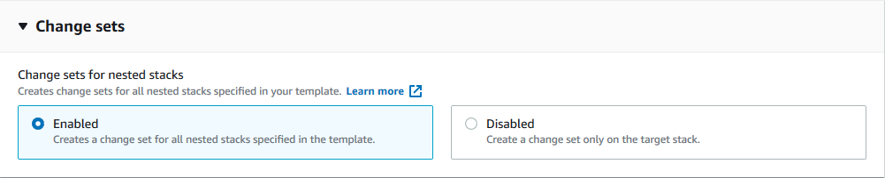

Le traduzioni sono generate tramite traduzione automatica. In caso di conflitto tra il contenuto di una traduzione e la versione originale in Inglese, quest'ultima prevarrà.
Set di modifiche per stack nidificati
Con i set di modifiche per gli stack nidificati è possibile visualizzare in anteprima le modifiche alle risorse dell'applicazione e dell'infrastruttura nell'intera gerarchia dello stack nidificato e procedere con gli aggiornamenti dopo aver confermato che tutte le modifiche sono come previsto.
Per ulteriori dettagli sui set di modifiche per gli stack nidificati, vedere le sezioni seguenti:
Panoramica dei set di modifiche e degli stack nidificati
I set di modifiche per gli stack nidificati uniscono le seguenti funzionalità per espandere l'ambito di visualizzazione in anteprima delle modifiche all'intera gerarchia dello stack:
-
I set di modifiche sono una CloudFormation funzionalità che offre un'anteprima di come le modifiche proposte a uno stack influiranno sulle risorse esistenti o appena create. Al momento della creazione di un set di modifiche, CloudFormation fornisce un elenco di modifiche proposte confrontando lo stack con le modifiche apportate alle risorse inviate. Per ulteriori informazioni sui set di modifiche, vedere Aggiornamento di stack utilizzando i set di modifiche.
-
Gli stack nidificati sono stack creati all'interno di altri stack. Per creare uno stack nidificato, specificare la risorsa AWS::CloudFormation::Stack nella sezione
Resourcedel modello. Ad esempio, è possibile che si disponga di risorse correlate alla rete e alla sicurezza in uno stack nidificato e risorse dell'applicazione in un altro. Il partizionamento dei modelli applicativi in questo modo aiuta con la manutenibilità e il riutilizzo del codice. Per ulteriori informazioni sugli stack nidificati, consultare Gestione di stack nidificati.
Gestione dei set di modifiche per stack nidificati (console)
-
Creare un set di modifiche – Crea un set di modifiche inviando le modifiche da qualsiasi livello della gerarchia dello stack. È possibile inviare un modello di stack modificato o valori di parametro di input modificati e CloudFormation confronta gli stack nidificati con le modifiche inviate per generare un set di modifiche. I set di modifiche per gli stack nidificati sono abilitati per impostazione predefinita nella console CloudFormation. Per ulteriori informazioni, consulta Creazione di un set di modifiche.
Nota
Un set di modifiche root è il set di modifiche associato allo stack da cui viene creata l'intera gerarchia dei set di modifiche. È necessario eseguire o eliminare i set di modifiche per gli stack nidificati dal set di modifiche root.
-
Visualizza il set di modifiche – Visualizza le modifiche alle risorse all'interno degli stack nidificati prima di eseguirle. È possibile visualizzare le modifiche proposte nella sezione Modifiche del set di modifiche esplorando lo stack corrente e i relativi set di modifiche nidificati. Per ulteriori informazioni, vedere Visualizzazione di un set di modifiche.
-
Eseguire il set di modifiche – Eseguire le modifiche descritte nel set di modifiche relativo allo stack corrente e ai relativi discendenti. L'operazione di esecuzione deve essere eseguita dal set di modifiche root. Per ulteriori informazioni, vedere Esecuzione di un set di modifiche.
-
Elimina il set di modifiche – Rimuove i set di modifiche dallo stack corrente. L'eliminazione di un set di modifiche consente di impedire all'utente o a un altro utente di avviare accidentalmente un set di modifiche che non deve essere applicato. L'operazione di eliminazione deve essere eseguita dal set di modifiche root. Per ulteriori informazioni, consulta Eliminazione di un set di modifiche.
Gestione dei set di modifiche per stack nidificati (AWS CLI)
-
create-change-set: per impostazione predefinita, i set di modifiche per gli stack nidificati non sono abilitati per la AWS CLI. Per creare un set di modifiche per l'intera gerarchia dello stack, specificare il parametro--include-nested-stacks. Per ulteriori informazioni, consulta Per creare un set di modifiche (AWS CLI).
L'esempio seguente AWS CLI è di un input create-change-set.
aws cloudformation create-change-set \ --stack-namemy-root-stack\ --change-set-namemy-root-stack-change-set\ --template-bodyfile://template.yaml\ --capabilities CAPABILITY_IAM \ --include-nested-stacks
L'esempio seguente AWS CLI è di un output create-change-set.
{ "Id":"arn:aws:cloudformation:us-west-2:123456789012:changeSet/my-root-stack-change-set/4eca1a01-e285-xmpl-8026-9a1967bfb4b0", "StackId": "arn:aws:cloudformation:us-west-2:123456789012:Stack/my-root-stack/d0a825a0-e4cd-xmpl-b9fb-061c69e99204" }
-
describe-change-set– Restituisce un elenco di modifiche che CloudFormation apporterà se si esegue il set di modifiche. Se il set di modifiche specificato contiene set di modifiche secondarie che appartengono a stack nidificati,ChangeSetIdrestituirà informazioni su tale set di modifiche. Per ulteriori informazioni, consulta Per visualizzare un set di modifiche (AWS CLI).
L'esempio seguente AWS CLI è di un input describe-change-set per il set di modifiche dello stack root.
aws cloudformation describe-change-set \ --change-set-namemy-root-stack-change-set\ --stack-namemy-root-stack
L'esempio seguente AWS CLI è di un output describe-change-set per il set di modifiche dello stack root.
{ "Changes": [ { "Type": "Resource", "ResourceChange": { "Action": "Modify", "LogicalResourceId": "ChildStack", "PhysicalResourceId": "arn:aws:cloudformation:us-west-2:123456789012:stack/my-nested-stack/d0a825a0-e4cd-xmpl-b9fb-061c69e99205", "ResourceType": "AWS::CloudFormation::Stack", "Replacement": "False", "ChangeSetId": "arn:aws:cloudformation:us-west-2:123456789012:changeSet/my-nested-stack-change-set/4eca1a01-e285-xmpl-8026-9a1967bfb4b0", "Scope": [ "Properties" ], "Details": [ { "Target": { "Attribute": "Properties", "RequiresRecreation": "Never" }, "Evaluation": "Dynamic", "ChangeSource": "Automatic" } ] } } ], "ChangeSetName": "my-root-stack-change-set", "ChangeSetId": "arn:aws:cloudformation:us-west-2:123456789012:changeSet/my-root-stack-change-set/4eca1a01-e285-xmpl-8026-9a1967bfb4b0", "StackId": "arn:aws:cloudformation:us-west-2:123456789012:stack/my-root-stack/d0a825a0-e4cd-xmpl-b9fb-061c69e99204", "StackName": "my-root-stack", "IncludeNestedStacks": true, "ParentChangeSetId": null, "RootChangeSetId": null, "Description": null, "Parameters": null, "CreationTime": "2020-11-18T05:20:56.651Z", "ExecutionStatus": "AVAILABLE", "Status": "CREATE_COMPLETE", "StatusReason": null, "NotificationARNs": [ ], "RollbackConfiguration": { }, "Capabilities": [ "CAPABILITY_IAM" ], "Tags": null }
L'esempio seguente AWS CLI è di un input describe-change-set per il set di modifiche dello stack nidificato.
aws cloudformation describe-change-set \ --change-set-namemy-nested-stack-change-set\ --stack-namemy-nested-stack
L'esempio seguente AWS CLI è di un output describe-change-set per il set di modifiche dello stack nidificato.
{ "Changes": [ { "Type": "Resource", "ResourceChange": { "Action": "Modify", "LogicalResourceId": "function", "PhysicalResourceId": "my-function", "ResourceType": "AWS::Lambda::Function", "Replacement": "False", "ChangeSetId": null, "Scope": [ "Properties" ], "Details": [ { "Target": { "Attribute": "Properties", "Name": "Timeout", "RequiresRecreation": "Never" }, "Evaluation": "Static", "ChangeSource": "DirectModification" } ] } } ], "ChangeSetName": "my-nested-stack-change-set", "ChangeSetId": "arn:aws:cloudformation:us-west-2:123456789012:changeSet/my-nested-stack-change-set/4eca1a01-e285-xmpl-8026-9a1967bfb4b0", "StackId": "arn:aws:cloudformation:us-west-2:123456789012:stack/my-nested-stack/d0a825a0-e4cd-xmpl-b9fb-061c69e99205", "ParentChangeSetId": "arn:aws:cloudformation:us-west-2:123456789012:changeSet/my-root-stack-change-set/4eca1a01-e285-xmpl-8026-9a1967bfb4b0", "RootChangeSetId": "arn:aws:cloudformation:us-west-2:123456789012:changeSet/my-root-stack-change-set/4eca1a01-e285-xmpl-8026-9a1967bfb4b0", "IncludeNestedStacks": true, "StackName": "my-nested-stack", "Description": null, "Parameters": null, "CreationTime": "2020-11-18T05:20:56.651Z", "ExecutionStatus": "UNAVAILABLE", "Status": "CREATE_COMPLETE", "StatusReason": "Executable from root change set", "NotificationARNs": [ ], "RollbackConfiguration": { }, "Capabilities": [ "CAPABILITY_IAM" ], "Tags": null }
-
execute-change-set– Crea o aggiorna uno stack utilizzando le informazioni fornite in input al momento della creazione del set di modifiche specificato. Per creare un set di modifiche per l'intera gerarchia dello stack, specificare il parametro–include-nested-stacksdurante il processocreate-change-set. Per ulteriori informazioni, consulta Per eseguire un set di modifiche (AWS CLI).Nota
execute-change-setdeve essere eseguito dal set di modifiche root e applicherà il set di modifiche all'intera gerarchia di stack.
L'esempio seguente AWS CLI è di un input execute-change-set.
aws cloudformation execute-change-set \ --stack-namemy-root-stack\ --change-set-namemy-root-stack-change-set
-
delete-change-set– Elimina il set di modifiche specificato. L'eliminazione dei set di modifiche garantisce che nessuno esegua il set di modifiche errato. L'eliminazione dei set di modifiche è asincrona per i set di modifiche creati con il parametro–include-nested-stacks. Per ulteriori informazioni, consulta Per eliminare un set di modifiche (AWS CLI).Nota
delete-change-setdeve essere eseguito dal set di modifiche root ed eliminerà l'intera gerarchia dei set di modifiche. Anche gli stack nidificati nello statoREVIEW_IN_PROGRESSverranno eliminati se sono stati creati durante l'operazionecreate-change-set.
L'esempio seguente AWS CLI è di un input delete-change-set sul set di modifiche root.
aws cloudformation delete-change-set \ --stack-namemy-root-stack\ --change-set-namemy-root-stack-change-set